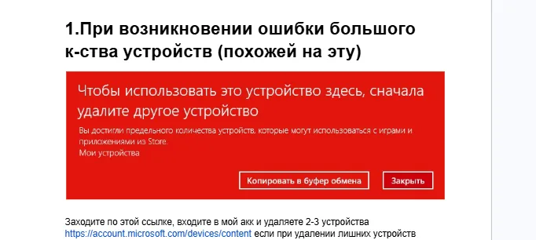
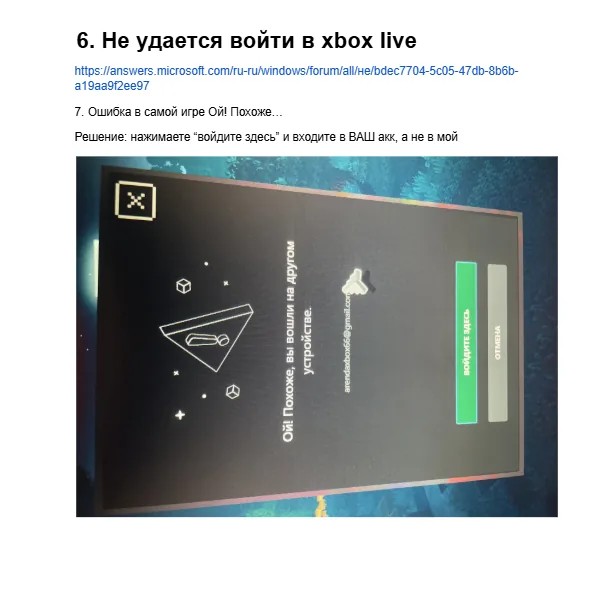

Выйдите из аккаунта Microsoft Store и Xbox App перед началом.
XBOX GAME PASS
Вход, гайд и решение ошибок без лишней переписки
Скопируйте данные, посмотрите видео-гайд и быстро найдите нужную ошибку. Всё собрано в одном месте для покупателей FunPay.
Данные аккаунта
Скопируйте почту и пароль
Данные обновляются через админку и сразу появляются на сайте. Если пароль уже указан — писать продавцу не нужно.
Сначала войдите в Microsoft Store в выданный аккаунт. Потом запустите Xbox App и войдите в свой личный аккаунт.
Обновлено: ...
Видео-гайд
Открыть на YouTube
Гайд по привязке подписки
Смотрите внимательно перед входом. Это сильно снижает шанс ошибок.
Перед входом
В Microsoft Store входите в выданный аккаунт, в Xbox App — в свой личный.
EA Play: входите через иконку Xbox в приложении EA.
Не выходите из аккаунта без необходимости и не делитесь им.
Если ошибка входа — не спамьте попытками, подождите.
Если просит изменить сведения защиты — нажмите «Далее» 2–4 раза.
Быстрый поиск
Найдите ошибку
0x8007003B / Too many requests / много попыток
Не спамьте входами. Перезагрузите ПК, удалите аккаунт в Windows: Настройки → Учётные записи, подождите и попробуйте снова. Используйте VPN США. Если не помогает — смените страну VPN.
Ошибка большого количества устройств
Откройте account.microsoft.com/devices/content, войдите в аккаунт и удалите 2–3 лишних устройства. Если ошибка — сначала удалите устройство на account.microsoft.com/devices.

Установка на другой диск / раздел
Если ставите на диск D, папка должна быть в корне: D:\WindowsApps. Если её нет — создайте. Затем Пуск → Xbox → параметры → «Исправить», потом «Сбросить».
Ошибки типа 0x00070045
По таким ошибкам обычно помогает поиск по точному коду ошибки. Скопируйте код и проверьте первые решения Microsoft/форумов.
Error 0x80073CFB
Ошибка может быть из-за неполного удаления пиратской копии игры. Удалите остатки файлов и реестра.
Error 0x803f8001 — игра платная или недоступна
Закройте Xbox через трей → Параметры Windows → Регион → выберите Германия. Формат региона можно не менять. Потом снова откройте Xbox. Если не помогло — перезайдите в учётку Store.
Error 0x80073cf6
Антивирус, часто Kaspersky, может блокировать установку служб. Остановите или удалите его. Также выполните wsreset.exe.
Ультимативное решение почти любой ошибки
- Отключите антивирус.
- Обновите Windows.
- Включите автоматическое время и часовой пояс.
- Выполните
wsreset.exe. - Xbox → параметры → «Исправить» → «Сбросить».
- CMD от имени администратора:
sfc /scannow, затем перезагрузка. - PowerShell от имени администратора: используйте команду ниже.
Игра вылетает
Если вылетает в окне запуска или через пару минут — отключите антивирус и брандмауэр Windows.
Если вылетает через 10–30 минут: используйте фикс, запустите игру, дождитесь загрузки и нажмите Numpad+. После игры нажмите Numpad-. Если NumPad нет: завершите проводник в диспетчере задач, потом запустите explorer.exe.
Не скачивается игра / остановилась загрузка
- Убедитесь, что сменили регион.
- Перезапустите Xbox через трей.
- Если не помогло — перезагрузите ПК.
- Отключите антивирус и брандмауэр.
Не удаётся войти в Xbox Live
Проверьте Microsoft Answers: открыть ссылку.
Ошибка «Ой! Похоже…»
Нажмите «Войдите здесь» и входите в ваш личный аккаунт, а не в выданный аккаунт Store.

Спасибо
Открыть FunPay
Если всё получилось — оставьте отзыв
Это очень помогает продавцу. Нажмите кнопку ниже, чтобы открыть профиль FunPay.